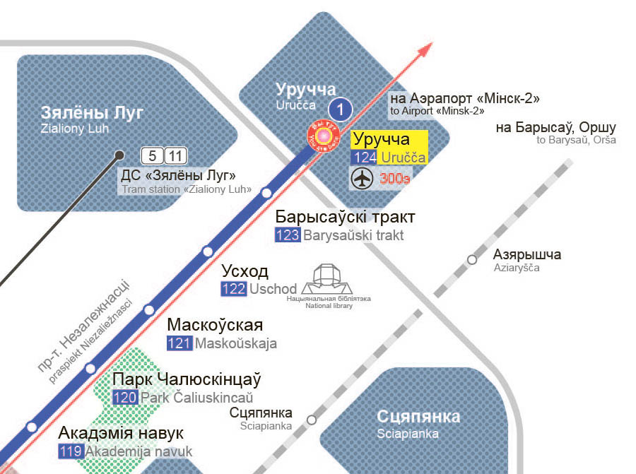

История белорусских букв
Азбука — это не так просто, как может показаться на первый взгляд. Ведь письменность связана со многим: со структурой языка и его ролью в обществе, с культурой, религией и политикой. Вспомним историю белорусских букв — историю выбора, борьбы и поиска себя.
I
Три белорусских алфавита
Белорусский язык записывался разными алфавитами: кириллическим, латинским и арабским. У каждого из них была своя окраска, религиозная, идеологическая или национально-культурная. Все они со временем приобретали особый характер, который отражал самобытность белорусского языка.
Конец X в.
Кириллица распространяется на землях восточных славян
988 г. — дата крещения Руси. Связь кириллицы и православия будет сохраняться многие века. Не исключено, что восточные славяне знали письменность и до принятия христианства, но точных научных данных на этот счет пока нет.
Фрагмент из Радзивилловской летописи: князь Владимир говорит с византийским философом о христианстве
XI – нач. XIV в.
Расцветает древнерусская книжность
До начала XIV в. у восточных славян была общая история и общий язык — древнерусский (но местные различия в речи, безусловно, существовали). Кроме того, использовался церковнославянский язык — старославянский язык в восточнославянской редакции.
На белорусских землях переписываются библейские тексты, создаются летописи, жития святых, проповеди и сказания. Это время жизни Евфросинии Полоцкой, Кирилла Туровского и других белорусских просветителей. Берестяные грамоты показывают, что письменность использовалась и в быту.
На белорусских землях переписываются библейские тексты, создаются летописи, жития святых, проповеди и сказания. Это время жизни Евфросинии Полоцкой, Кирилла Туровского и других белорусских просветителей. Берестяные грамоты показывают, что письменность использовалась и в быту.
Начало XVI в.
Франциск Скорина печатает первые белорусские книги
В 1517 г. Франциск Скорина печатает в Праге «Псалтырь». До 1525 г. вначале в Праге, а затем в Вильно выходят и другие части скориновской Библии.
Скорина хотел сделать свои книги понятными для читателей, поэтому он объяснял на полях некоторые слова, а иногда вообще переходил с церковнославянского языка на старобелорусский — в предисловиях, послесловиях и стихотворениях, которыми он дополнял библейские книги (начало старобелорусского этапа – XIV в.). Для XVI в. такой демократизм был революционным.
Скорина хотел сделать свои книги понятными для читателей, поэтому он объяснял на полях некоторые слова, а иногда вообще переходил с церковнославянского языка на старобелорусский — в предисловиях, послесловиях и стихотворениях, которыми он дополнял библейские книги (начало старобелорусского этапа – XIV в.). Для XVI в. такой демократизм был революционным.
 |
На страницах Библии Ф. Скорины можно увидеть, что уже появились пробелы, но предлоги еще часто не отделяются от следующего слова
1529–1588 гг.
Выходит Статут ВКЛ
Три издания Статута Великого княжества Литовского были написаны на старобелорусском языке. Светские издания были не так сильно, как религиозные, связаны с традициями церковнославянского языка. Но для записи старобелорусского языка использовалась традиционная кириллица.
По-белорусски начинают писать не только кириллицей
С XVI–XVII вв.
Татары пишут на белорусском языке арабской вязью

Фрагмент китаба из музея И. Луцкевича. Транслитерация: «Цэмна было, очы сьветласьці не відзелі. Куры не пелі, сабакі не брэхалі. Дошч ішоу, цемна было, вецер веяш. Разумеу, што судны дзень настау».
В XIV—XV вв. в ВКЛ приезжают татары. Со временем они переходят на местный язык и адаптируют арабскую графику для записи белорусской речи, в т. ч. вводят новые буквы. Так появились китабы.
Эти загадочные на первый взгляд тексты — важный источник для изучения истории белорусского языка, потому что в них видны яркие особенности живой речи того времени. Консервативная кириллица не позволяла так полно отражать специфику старобелорусского языка.
Эти загадочные на первый взгляд тексты — важный источник для изучения истории белорусского языка, потому что в них видны яркие особенности живой речи того времени. Консервативная кириллица не позволяла так полно отражать специфику старобелорусского языка.
Вторая половина XVI в.
Приходит латиница
В конце XVI в., после вхождения Великого княжества Литовского в состав Речи Посполитой, стали появляться первые памятники на латинице (сохранилось несколько документов и надписей).
С XVII в. латинский алфавит используется в театре. Пьесы писались на латинском или польском языках, а белорусский язык звучал в интермедиях, которые развлекали зрителей в антрактах. В основном интермедии записывались польской графикой, но иногда можно увидеть самобытные написания. Например, белорусский [г] обозначался то как ch, то как h (второе написание используется до сих пор).
С XVII в. латинский алфавит используется в театре. Пьесы писались на латинском или польском языках, а белорусский язык звучал в интермедиях, которые развлекали зрителей в антрактах. В основном интермедии записывались польской графикой, но иногда можно увидеть самобытные написания. Например, белорусский [г] обозначался то как ch, то как h (второе написание используется до сих пор).

По этому документу Витебск получил Магдебургское право в 1597 г.
XIX в.
Латинский алфавит выходит на первый план
Грамотность белорусских крестьян в середине XIX в. (по субъективному мнению В. Дунина-Марцинкевича)
В. Дунин-Марцинкевич писал в цензурный комитет:
«В наших провинциях из ста крестьян, наверно, можно найти 10, которые хорошо читают по-польски, когда, напротив, из тысячи насилу сыщется один знающий русский язык.
То напечатав какое-либо белорусское сочинение русскими буквами, смело можно запереть оные в сундук, ибо... высший класс общества... не возьмет и в руки простонародной книги, а крестьяне хотя бы и желали читать повести и рассказы... не зная русских букв, не в состоянии удовлетворить своего желания».
«В наших провинциях из ста крестьян, наверно, можно найти 10, которые хорошо читают по-польски, когда, напротив, из тысячи насилу сыщется один знающий русский язык.
То напечатав какое-либо белорусское сочинение русскими буквами, смело можно запереть оные в сундук, ибо... высший класс общества... не возьмет и в руки простонародной книги, а крестьяне хотя бы и желали читать повести и рассказы... не зная русских букв, не в состоянии удовлетворить своего желания».
1859 г.
Цензура запретила публиковать книги на белорусском языке латиницей
В Российской империи латинка была связана не только с религией (католичеством), но и с идеологией и политикой. Выбор латинского алфавита означал оппозиционные взгляды, свободомыслие, западную ориентацию. Кастусь Калиновский мог выбрать только латиницу.
 |
Конец XIX – начало XX вв.
Кириллица или латиница?
В 1906—1917 гг. выходило не менее 60 изданий в двух алфавитах параллельно. Велись дискуссии о выборе азбуки.
«Вопросы, связанные с двумя алфавитами белорусского письма, — это локальное, но концентрированное выражение основной проблемы в истории белорусского народа — проблемы национально-культурного и политического самосохранения в условиях „жизни в тени“ России и Польши. <…> И два алфавита в обескровленной культуре — это часть реальности… Белорусское возрождение 1906−1918 гг. стремилось возродить или выработать третье (не польское и не русское) начало, объединяющее белорусов».
Н. Б. Мечковская
Если в XIX в. преобладала латиница, то на рубеже XIX—XX вв. — кириллица
Количество сохранившихся белорусских книг на кириллице и латинице за два периода (подсчеты И. О. Гапоненко по каталогу «Книга Беларуси: 1517−1917»)
К 30-м годам XX в. кириллица стала единственным официальным алфавитом
Далее идет работа над орфографией белорусского языка — стандартами правописания. Но это уже отдельная история.
С 90-х годов XX в.
Латинский алфавит возвращается

В 1993 г. один номер газеты «Наша ніва» вышел полностью на латинке
Во второй половине XX в. о латинке почти забыли: она используется в основном в эмиграции. В независимой Беларуси снова возникает интерес к латинскому алфавиту, и он появляется в печатных изданиях и интернете. В это же время Азербайджан, Туркменистан, Узбекистан официально переходят на латиницу.
Сегодня латинка — живой, хоть и неофициальный белорусский алфавит. Некоторые белорусы выбирают его для повседневного письма. Даже переводчик Google знает белорусскую латинку.
Сегодня латинка — живой, хоть и неофициальный белорусский алфавит. Некоторые белорусы выбирают его для повседневного письма. Даже переводчик Google знает белорусскую латинку.
XXI в.
На основе белорусской латинки создаются стандарты

Фрагмент схемы минского метрополитена 2015 г.
В 2000 г. была разработана «Инструкция по транслитерации белорусских географических названий буквами латинского алфавита». Позже стандарт приблизили к традиционной белорусской латинке. В 2013 г. эта система была принята ООН.
Латинские надписи в минском метро, которые вызвали много дискуссий, соответствуют этому стандарту. Споры о буквах не прекращаются.
Латинские надписи в минском метро, которые вызвали много дискуссий, соответствуют этому стандарту. Споры о буквах не прекращаются.
II
Путь белорусской кириллицы
Славянская азбука была нужна, чтобы переводить библейские тексты на старославянский язык. Сейчас кириллицей пользуются многие народы, в том числе и белорусы. Проследим, как старославянская кириллица превратилась в белорусскую: какие буквы добавились (+), а какие исчезли (−).
Традиционная кириллица
Появление кириллицы — неразгаданная загадка. Большинство исследователей считают, что Кирилл и Мефодий создали первую славянскую азбуку — глаголицу, а затем их ученики придумали кириллицу.
1
Кириллический алфавит был похож на греческий. Некоторые буквы использовались только в греческих заимствованиях: ѯ = пс, ѱ = кс.
2
Со временем некоторые звуки исчезли, а буквы остались. Так, юсы (ѧ, ѫ) обозначали пропавшие носовые звуки. На месте ятя (ѣ) в белорусском и русском языках в большинстве случаев стали произносить [э].
3
Были дублетные буквы. Например, для обозначения звука [з] было две буквы: ѕ = з, для [o] - о = ѡ (иногда над омегой сверху ставили т: ѿ). Звук [и] мог обозначаться три буквы: и = і = ѵ.
4
Некоторые буквы писались не так, как сейчас. Например, а с палочкой впереди (так обозначались йотированные звуки: [йа]) со временем заменили на я.
5
У букв были другие названия: а называлась аз, т. е. 'я', б − букы 'буква', в − веди 'знать' и т. д.
6
Не различались строчные и прописные буквы.
7
Числа обозначались буквами (для этого над буквами ставились специальные значки): а = 1, в = 2, г = 3, і = 8, и = 10, ц = 900… Буквы, которых не было в греческом языке (б, ж, ш и др.), не имели числового значения.

Текст на Cтатуте ВКЛ: буква а со специальным знаком внизу обозначала 1 000, ф — 500, п — 80, и — 8. Это издание 1588 г.
Первое изменение
Буква й вначале называлась «и с краткой» (кратка — это надстрочный значок). Точно установить год рождения й сложно, в алфавитные списки эта буква долгое время не включалась, и до сих пор она занимает «маргинальное» положение в алфавите, например не используется в списках.
Петровская реформа

Гражданская азбука с исправлениями Петра I (1710 г.)
В 1707—1710 гг. Петр I создает гражданский шрифт для печати светских текстов. Петр приближает начертание кириллических букв к латинским, вводит арабские цифры, и поэтому стало возможным избавиться от некоторых лишних букв. Кроме того, стали различаться прописные и строчные буквы.
Работа над графикой продолжалась в Академии наук до середины XVIII в. Некоторые петровские нововведения были отменены. Например, Петр сначала исключил ижицу (ѵ) из алфавита, но потом Академия наук ее вернула.
Иногда говорят, что гражданский шрифт придумал Илья Копиевич (Копиевский) — белорус, живший в Амстердаме. Эта версия не доказана, но ясно, что поиски Копиевича были близки петровским.
С 70-х годов XVIII в. светские книги гражданским алфавитом печатает Могилевская типография.
Работа над графикой продолжалась в Академии наук до середины XVIII в. Некоторые петровские нововведения были отменены. Например, Петр сначала исключил ижицу (ѵ) из алфавита, но потом Академия наук ее вернула.
Иногда говорят, что гражданский шрифт придумал Илья Копиевич (Копиевский) — белорус, живший в Амстердаме. Эта версия не доказана, но ясно, что поиски Копиевича были близки петровским.
С 70-х годов XVIII в. светские книги гражданским алфавитом печатает Могилевская типография.
История ё
Днем рождения ё иногда называют 1797 г., когда эта буква появилась в альманахе Н. Карамзина. Именно Карамзин сделал много для популяризации этой буквы. Но в алфавите она появилась благодаря Е. Дашковой. Подробнее об истории ё можно почитать здесь. В белорусском языке, в отличие от русского, написание ё сделали обязательным.
Современный белорусский алфавит
В русском языке в 1917—1918 гг. провели реформу графики и орфографии, которая позволила избавиться от лишних букв и упростить письмо.
Стандарта белорусского языка на тот момент не существовало (единых учебников не было, и люди писали по-разному), поэтому изменения в графике происходили стихийно, без реформ.
Стандарта белорусского языка на тот момент не существовало (единых учебников не было, и люди писали по-разному), поэтому изменения в графике происходили стихийно, без реформ.
Символ белорусской азбуки — буква ў
1
Букву ў предложил русский филолог П. Бессонов. Ее можно увидеть в книге П. Шейна «Белорусские народные песни…» (1874 г.).
2
Такая буква есть также в некоторых языках, на которых говорят в Азии, например в дунганском. В других славянских языках ў нет.
3
Могли быть и другие особенные белорусские буквы. Так, предлагали заменить диграфы дз и дж, см. статью Владимира Дубовки «Проэкт літар для згукаў "дз" і "дж"».
История белорусских букв продолжается. Наши современники совершенствуют орфографию, создают белорусские шрифты, пишут книги. А азбука — это первооснова.
Основные источники
Беларуская мова і мовазнаўства: ХІХ стагоддзe / пад агул. рэд. М. Р. Прыгодзіча. Мінск, 2013.
Истрин, В. А. 1100 лет славянской азбуки. М., 1982.
Кніжная спадчына Беларусі / складальнік А. А. Суша; фота А. П. Дрыбаса. Мінск, 2014.
Мечковская, Н. Б. Зачем одному народу две азбуки? (Кириллица и латинка в коллизиях белорусского возрождения) // Мечковская, Н. Б. Белорусский язык: социолингвистические очерки. Мюнхен, 2003. С. 47−62.
Супрун, А. Е. Происхождение славянской письменности (Кирилло-мефодиевская проблематика) / Супрун, А. Е. Выбраныя працы. Мінск, 2013. С. 238−273.
Шакун, Л. М. Гісторыя беларускай літаратурнай мовы. Мінск, 1984.
Истрин, В. А. 1100 лет славянской азбуки. М., 1982.
Кніжная спадчына Беларусі / складальнік А. А. Суша; фота А. П. Дрыбаса. Мінск, 2014.
Мечковская, Н. Б. Зачем одному народу две азбуки? (Кириллица и латинка в коллизиях белорусского возрождения) // Мечковская, Н. Б. Белорусский язык: социолингвистические очерки. Мюнхен, 2003. С. 47−62.
Супрун, А. Е. Происхождение славянской письменности (Кирилло-мефодиевская проблематика) / Супрун, А. Е. Выбраныя працы. Мінск, 2013. С. 238−273.
Шакун, Л. М. Гісторыя беларускай літаратурнай мовы. Мінск, 1984.

{kind=link}